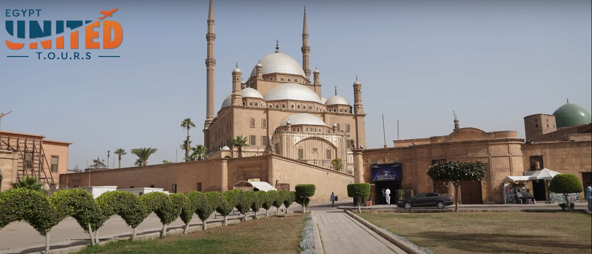
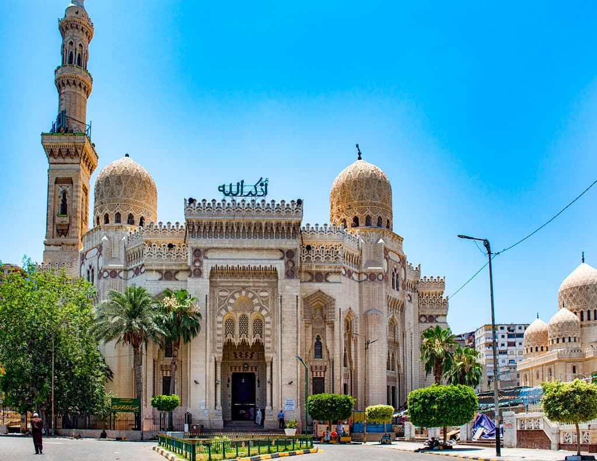
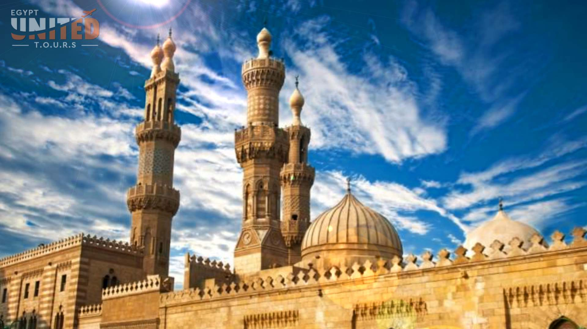
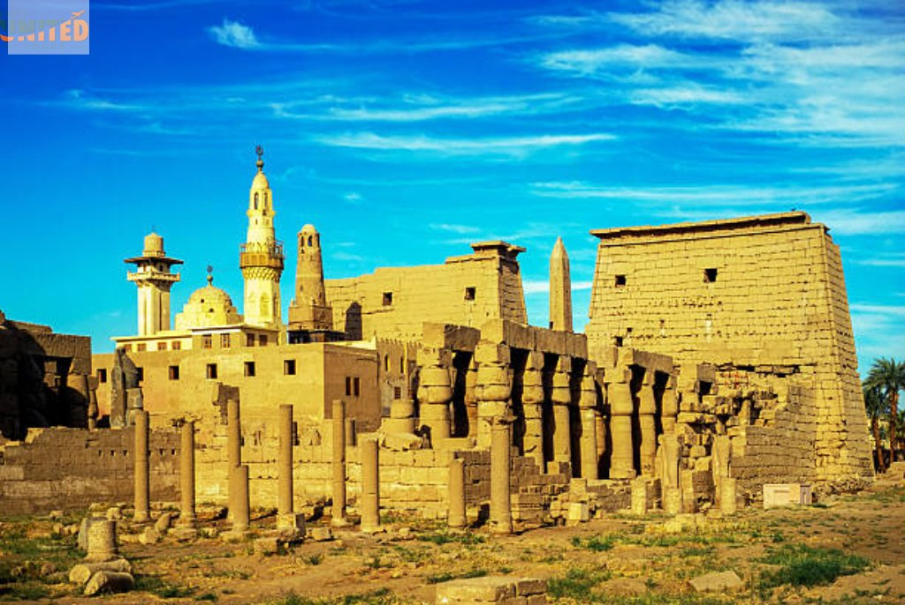
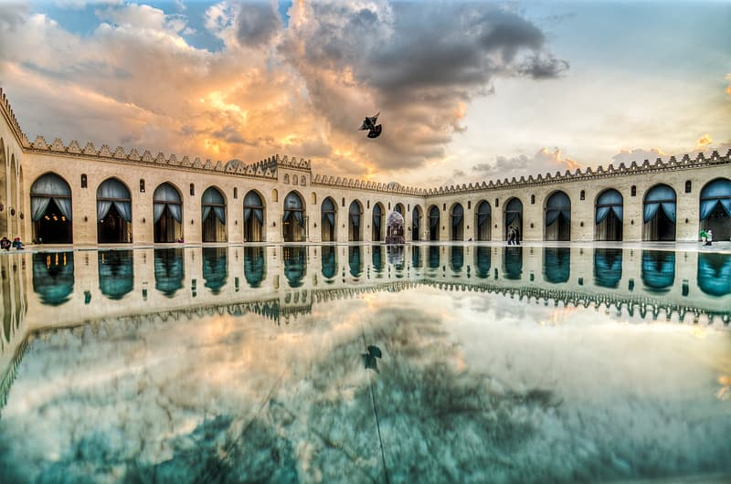
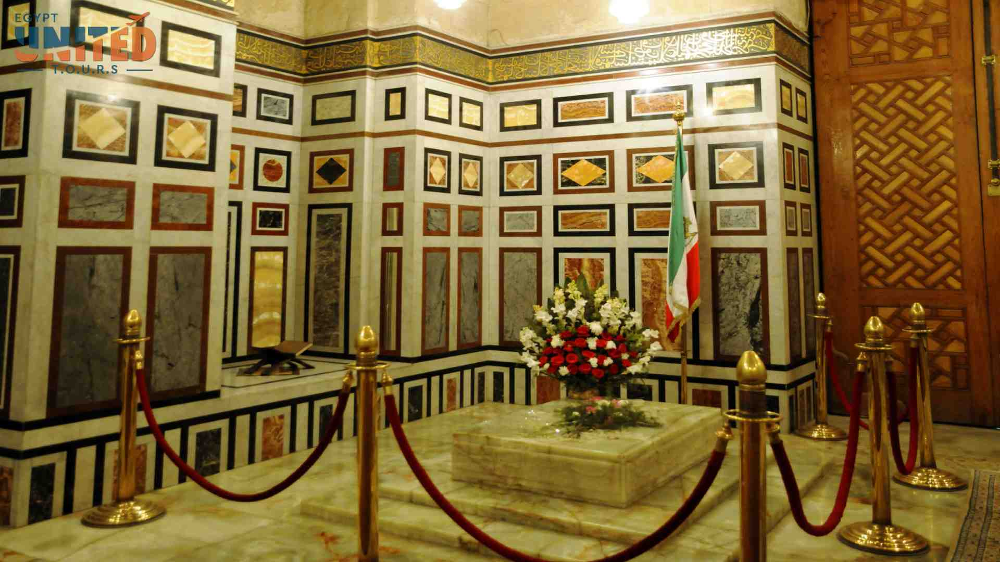
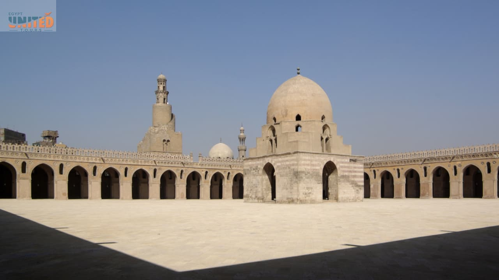
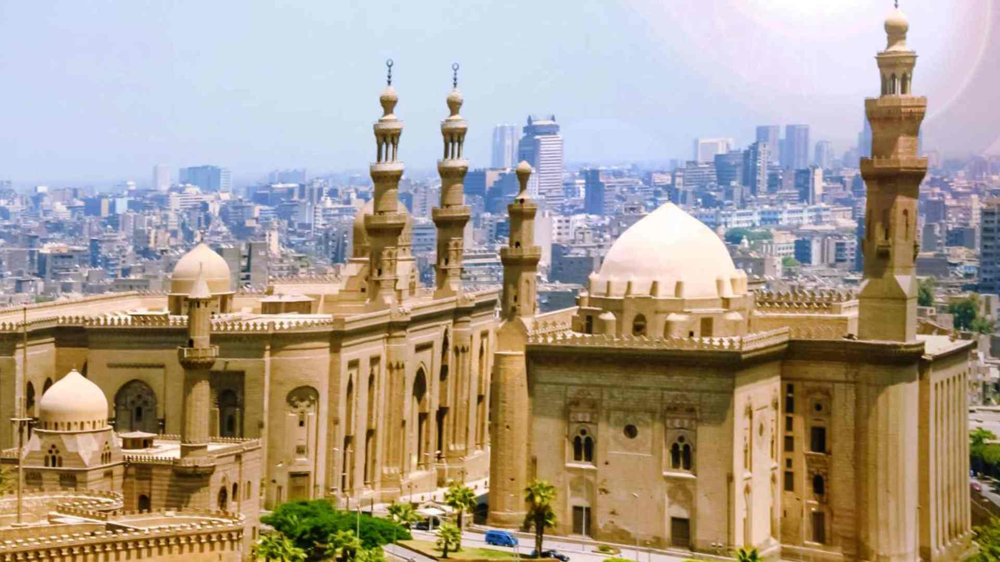

Opulence 8 Days Egypt Trip With Nile Cruise 2023/2024 Details $ 3844
Are you hunting for any mediaeval marvels on this planet that will leave you speechless? Then Egypt is the place for you to go. Egypt is a Sub-Saharan African country in the continent’s northwestern corner. The main religion practised here is Islam, and you may visit various mosques that are rich in history and decorated with beautiful decorations. You may easily design your trip to include visits to Egypt's most opulent mosques.
You Must Visit Egypt's Top 10 Mosques
In Egypt, the Alabaster Mosque, also known as the Muhammad Ali Mosque, is well-known. This is one of Egypt's most stunning mosques. This location stands out in the country as a tourism destination. If you ever find yourself in Egypt, you must pay a visit to this mosque. Furthermore, you must be physically fit in order to appreciate the beauty of this mosque. This mosque is placed on the Saladin Citadel's highest point. The mosque's huge minarets are 270 feet tall. You will have the greatest delight in catching a view of the entire metropolis of Cairo.
The Abu Al-Abbas Al-Mursi Mosque in Alexandria, Egypt, is a must-see for everyone visiting the city. It is a 13th-century mosque, and it is the largest of Alexandria's mosques. The mosque was designed in the style of historic Cairo buildings. It houses the tomb of Murcian Andalusi, a Sufi saint. The mosque lies in the centre of Alexandria and is easily accessible from anywhere in the city.
The Al-Azhar Mosque is one of Egypt's most well-known mosques. It is a one-of-a-kind attraction and one of Cairo's most popular tourist destinations. The mosque is connected to the university. It mostly belongs to the Sunni sect, but it also has a significant Shia influence. This university has the highest ranking and is the most respected in the country. If you're looking for a Shia mosque in Egypt, you can obtain all the information you need right here.
The Abu Haggag Mosque is one of Egypt's best mosques, and it stands out from the rest due to its historical beauty. Luxor is a UNESCO World Heritage Site and one of Egypt's oldest ancient cities. You should go to this city to obtain a true sense of Egypt's suburbs and rural areas.
This mosque is a must-see for design freaks who want to witness some of the most stunning Islamic architecture, including minarets. It is one of Egypt's most important Fatimid mosques. Between the years 990 and 1012 AD, Caliph Aziz erected this mosque. His son, Al-Hakim Bi Amr Allah, finished the construction of the mosque. If you are religious, this mosque is a good place to sit for a while and commune with God. The Cairo's Ibn Tulun Mosque has a significant influence.
The Al Rifa'i Mosque, located in Cairo, is one of the city's most important mosques, having been constructed over a period of 40 years. It was built between 1869 and 1912, with the work beginning in 1869 and ending in 1912. Al Rifa'i is the name of the mosque. In addition, you can see The royal family members' graves inside the Mosque of Al Rifai. The mosque's distinguishing feature is that the prayer takes place within the mosque, which you won't find in other mosques.
When it comes to Egypt, the Ibn Tulun Mosque should be on your list of places to see. It is Cairo's largest mosque, as well as the city's oldest. If you've ever been to Mecca, you could notice a resemblance to the mosque there. Gebel Yashkur constructed it. This is another vantage point from which you can get a bird's eye perspective of the city, making it an excellent site to take images of the city. Furthermore, images of the minaret staircase can serve as a lasting memory.
It is yet another big mosque in Egypt's capital city. If you are on a tour of Egypt, you should not miss this location. You can focus on the Muslim education system in the Madrasa, which is inside the mosque. Sultan Hassan Mosque was built in the Mamluk era and features Mamluk features. Apart from being one of Egypt's Salafi Mosques, it also houses the other Sunni schools of Islam's theology. Hanafi, Hanbali, and Malaki are their names.
The Al Ashraf Mosque is located in Cairo's major metropolis. By visiting this mosque, you may get a sense of the scale of Islamic Mamluk architecture. The mosque has a Madrasa “School”, which is one of its most notable features. A typical Muslim school still serving up till today. There are numerous historical truths that you should be aware of. The Al Ashraf Mosque was built by the Burji Mamluk Sultan Al Ashraf Al-Barsbay. In the year 1424 A.D., it began.
This is one of Egypt's Ottoman mosques. The Aqsunqur Mosque was built around the 14th century. The usage of Iznik tiles in the interiors of this mosque will astound you. The mosque also contains a number of mausoleums. The mausoleums of the owner Shams El-Din Aqsunqur and his sons make up the complex.